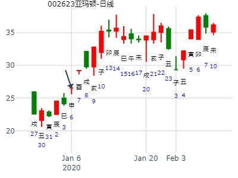
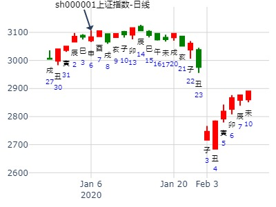
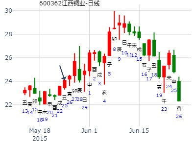
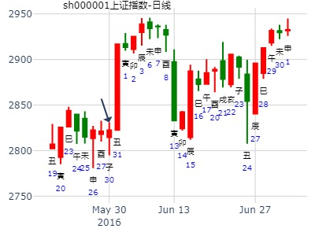
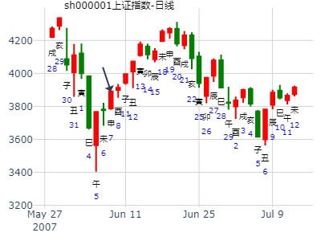
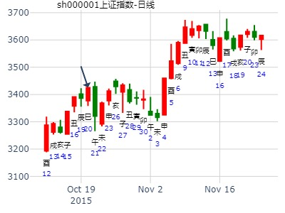
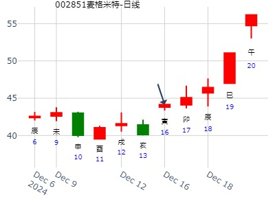

主帖标题: 002623亚玛顿股本周涨跌 手摇卦
公历时间：2020年1月6日21时39分 农历时间：己亥年 十二月十二日亥时
干 支：己亥年 丁丑月 戊申日 癸亥时
旬 空：辰巳 申酉 寅卯 子丑
神 煞：驿马─寅 桃花─酉 日禄─巳 贵人─丑，未
坤宫：地天泰（六合） 坤宫：泽天夬
六神 伏 神 【本 卦】 【变 卦】
朱雀 ▄▄ ▄▄ 子孙癸酉金 应 ▄▄ ▄▄ 兄弟丁未土
青龙 ▄▄ ▄▄ 妻财癸亥水 × ▄▄▄▄▄ 子孙丁酉金 世
玄武 ▄▄ ▄▄ 兄弟癸丑土 × ▄▄▄▄▄ 妻财丁亥水
白虎 ▄▄▄▄▄ 兄弟甲辰土 世 ▄▄▄▄▄ 兄弟甲辰土
螣蛇 父母乙巳火 ▄▄▄▄▄ 官鬼甲寅木 ▄▄▄▄▄ 官鬼甲寅木 应
勾陈 ▄▄▄▄▄ 妻财甲子水 ▄▄▄▄▄ 妻财甲子水


风生水起 占事：600362下周
起卦方式：手动摇卦
公历时间：2015年5月23日10时55分 ?
干 支：乙未年?辛巳月?己亥日?己巳时
旬 空：辰巳???申酉???辰巳???戌亥??
坤宫：地天泰（六合） 坤宫：泽天夬?
六神? 伏 神?【本 卦】 【变 卦】
勾陈 ▄▄ ▄▄ 子孙癸酉金 应 ▄▄ ▄▄ 兄弟丁未土
朱雀 ▄▄ ▄▄ 妻财癸亥水 × ▄▄▄▄▄ 子孙丁酉金 世
青龙 ▄▄ ▄▄ 兄弟癸丑土 × ▄▄▄▄▄ 妻财丁亥水
玄武 ▄▄▄▄▄ 兄弟甲辰土 世 ▄▄▄▄▄ 兄弟甲辰土
白虎 父母乙巳火 ▄▄▄▄▄ 官鬼甲寅木 ▄▄▄▄▄ 官鬼甲寅木 应
螣蛇 ▄▄▄▄▄ 妻财甲子水 ▄▄▄▄▄ 妻财甲子水
财爻月破是个病。

主帖标题: 2016第16局股市预测大赛
占事：上证指数本周最高点或最低点在何日（收盘为准）
公历起卦时间：2016年5月29日9时17分 (手工指定)
干支：丙申年 癸巳月 辛亥日 癸巳时 （日空：寅卯）
坤宫：地天泰 (六合) 坤宫：泽天夬
六神 伏神 本 卦 变 卦
腾蛇 子孙癸酉金 ▅▅ ▅▅ 应 兄弟丁未土 ▅▅ ▅▅
勾陈 妻财癸亥水 ▅▅ ▅▅ ╳→ 子孙丁酉金 ▅▅▅▅▅ 世
朱雀 兄弟癸丑土 ▅▅ ▅▅ ╳→ 妻财丁亥水 ▅▅▅▅▅
青龙 兄弟甲辰土 ▅▅▅▅▅ 世 兄弟甲辰土 ▅▅▅▅▅
玄武 父母乙巳火 官鬼甲寅木 ▅▅▅▅▅ 官鬼甲寅木 ▅▅▅▅▅ 应
白虎 妻财甲子水 ▅▅▅▅▅ 妻财甲子水 ▅▅▅▅▅
断：应事为子日（因亥非交易日），本周一冲高后，其余几日休整或回落，周末可积极介入

主帖标题: 5月17至5月21日大盘预测
公历时间：2021年5月14日15时47分 农历时间：辛丑年 四月初三日申时
干 支：辛丑年 癸巳月 壬戌日 戊申时
旬 空：辰巳 午未 子丑 寅卯
神 煞：驿马─申 桃花─卯 日禄─亥 贵人─巳，卯
坤宫：地天泰（六合） 坤宫：泽天夬
六神 伏 神 【本 卦】 【变 卦】
白虎 ▄▄ ▄▄ 子孙癸酉金 应 ▄▄ ▄▄ 兄弟丁未土
螣蛇 ▄▄ ▄▄ 妻财癸亥水 × ▄▄▄▄▄ 子孙丁酉金 世
勾陈 ▄▄ ▄▄ 兄弟癸丑土 × ▄▄▄▄▄ 妻财丁亥水
朱雀 ▄▄▄▄▄ 兄弟甲辰土 世 ▄▄▄▄▄ 兄弟甲辰土
青龙 父母乙巳火 ▄▄▄▄▄ 官鬼甲寅木 ▄▄▄▄▄ 官鬼甲寅木 应
玄武 ▄▄▄▄▄ 妻财甲子水 ▄▄▄▄▄ 妻财甲子水
主帖标题: [讨论]恒生指数探讨十五
公历时间：2006年6月25日21时57分 星期日
农历时间：丙戌年五月三十亥时
干支：丙戌年 甲午月 乙酉日 丁亥时 (旬空：午未)
神煞：驿马—亥 桃花—午 日禄—卯 贵人—子，申
坤宫：地天泰（六合） 坤宫：泽天夬
六神 伏 神 【本 卦】 【变 卦】
玄武 ▅▅ ▅▅ 子孙癸酉金 应 ▅▅ ▅▅ 兄弟丁未土
白虎 ▅▅ ▅▅ 妻财癸亥水 ×→ ▅▅▅▅▅ 子孙丁酉金 世
螣蛇 ▅▅ ▅▅ 兄弟癸丑土 ×→ ▅▅▅▅▅ 妻财丁亥水
勾陈 ▅▅▅▅▅ 兄弟甲辰土 世 ▅▅▅▅▅ 兄弟甲辰土
朱雀 父母乙巳火 ▅▅▅▅▅ 官鬼甲寅木 ▅▅▅▅▅ 官鬼甲寅木 应
青龙 ▅▅▅▅▅ 妻财甲子水 ▅▅▅▅▅ 妻财甲子水
周二的大盘情况，兄弟动而克制财爻，但是财本身有气，下跌有限，徘徊中下跌；80点左右到200点区间徘徊。收盘小跌。

占事：上证指数丙午月如何
起卦方式：手工指定 www.iqing.net 线上排盘系统
公历时间：2007年6月7日18时52分 星期四
干支：丁亥年 丙午月 壬申日 己酉时 (旬空：戌亥)
坤宫：地天泰（六合） 坤宫：泽天夬
六神 伏 神 【本 卦】 【变 卦】
白虎 ▅▅ ▅▅ 子孙癸酉金 应 ▅▅ ▅▅ 兄弟丁未土
螣蛇 ▅▅ ▅▅ 妻财癸亥水 ×→ ▅▅▅▅▅ 子孙丁酉金 世
勾陈 ▅▅ ▅▅ 兄弟癸丑土 ×→ ▅▅▅▅▅ 妻财丁亥水
朱雀 ▅▅▅▅▅ 兄弟甲辰土 世 ▅▅▅▅▅ 兄弟甲辰土
青龙 父母乙巳火 ▅▅▅▅▅ 官鬼甲寅木 ▅▅▅▅▅ 官鬼甲寅木 应
玄武 ▅▅▅▅▅ 妻财甲子水 ▅▅▅▅▅ 妻财甲子水
二段论，但是拐点不清晰。

占事: 有一官位空缺，求测本人能得否起卦方式：手动摇卦 公历时间：2007年7月1日16时16分 农历时间：丁亥年 五月十七日申时干支：丁亥年 丙午月 丙申日 丙申时 旬空： 辰巳 神煞：驿马─寅 桃花─酉 日禄─巳 贵人─酉，亥 坤宫：地天泰（六合） 坤宫：泽天夬 六神 伏 神 【本 卦】 【变 卦】青龙 ▄▄ ▄▄ 子孙癸酉金 应 ▄▄ ▄▄ 兄弟丁未土 玄武 ▄▄ ▄▄ 妻财癸亥水 X-> ▄▄▄▄▄ 子孙丁酉金 世白虎 ▄▄ ▄▄ 兄弟癸丑土 X-> ▄▄▄▄▄ 妻财丁亥水 螣蛇 ▄▄▄▄▄ 兄弟甲辰土 世 ▄▄▄▄▄ 兄弟甲辰土 勾陈 父母乙巳火 ▄▄▄▄▄ 官鬼甲寅木 ▄▄▄▄▄ 官鬼甲寅木 应朱雀 ▄▄▄▄▄ 妻财甲子水 ▄▄▄▄▄ 妻财甲子水
风生水起 占事：大盘到十月30日
起卦方式：手动摇卦
公历时间：2015年10月20日17时6分
干 支：乙未年 丙戌月 己巳日 癸酉时
旬 空：辰巳 午未 (戌亥) 戌亥
坤宫：地天泰（六合） 坤宫：泽天夬
六神 伏 神 【本 卦】 【变 卦】
勾陈 ▄▄ ▄▄ 子孙癸酉金 应 ▄▄ ▄▄ 兄弟丁未土
朱雀 ▄▄ ▄▄ 妻财癸亥水 X-> ▄▄▄▄▄ 子孙丁酉金 世
青龙 ▄▄ ▄▄ 兄弟癸丑土 X-> ▄▄▄▄▄ 妻财丁亥水
玄武 ▄▄▄▄▄ 兄弟甲辰土 世 ▄▄▄▄▄ 兄弟甲辰土
白虎 父母乙巳火 ▄▄▄▄▄ 官鬼甲寅木 ▄▄▄▄▄ 官鬼甲寅木 应
螣蛇 ▄▄▄▄▄ 妻财甲子水 ▄▄▄▄▄ 妻财甲子水

麦格米特本周-风生水起
时间: 2024-12-16 13时50分
干支: 甲辰年丙子月甲寅日 (旬空: 子丑 )
地天泰 泽天夬
六神 伏神 本 卦 变 卦
玄武 ▅▅ ▅▅ 子孙酉金 应 ▅▅ ▅▅ 兄弟未土
白虎 ▅▅ ▅▅ 妻财亥水 Ｘ→ ▅▅▅▅▅ 子孙酉金 世
腾蛇 ▅▅ ▅▅ 兄弟丑土 Ｘ→ ▅▅▅▅▅ 妻财亥水
勾陈 ▅▅▅▅▅ 兄弟辰土 世 ▅▅▅▅▅ 兄弟辰土
朱雀 父母巳火▅▅▅▅▅ 官鬼寅木 ▅▅▅▅▅ 官鬼寅木 应
青龙 ▅▅▅▅▅ 妻财子水 ▅▅▅▅▅ 妻财子水
六四：翩翩不富，以其邻，不戒以孚。
六五：帝乙归妹，以祉元吉。
